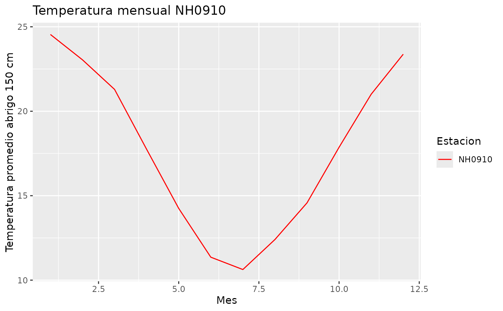

' Esta función genera un gráfico de líneas que muestra la temperatura promedio mensual para cada estación en el conjunto de datos proporcionado.
Arguments
- estaciones
Data frame o tibble con los datos de las estaciones. Debe contener las columnas: id, fecha, temperatura_abrigo_150cm.
- colores
Vector de colores para las líneas del gráfico. Si no se proporcionan suficientes colores, se generarán colores aleatorios.
- titulo
Título del gráfico. Por defecto es "Temperatura mensual".
Examples
grafico_temperatura_mensual(estacion_NH0910, colores = c("red", "blue"),
titulo = "Temperatura mensual NH0910")
